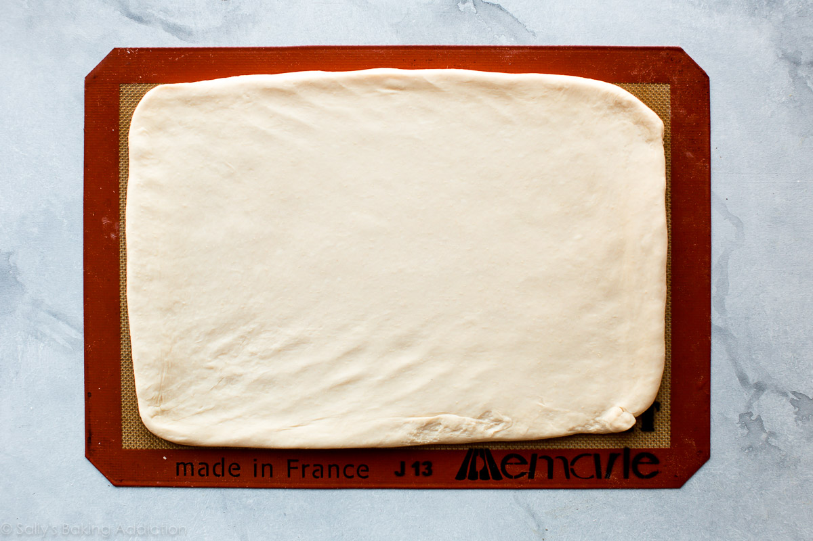

The Process
- make easy dough from butter, flour, sugar, salt, yeast, and milk
- roll out dough into a large rectangle
- make the butter layer (I have an easy trick for this!!!)
- enclose the butter layer inside the dough
-
roll out the dough into another large rectangle, then fold it back
together
- roll out the dough again, fold it back together again
- roll out the dough one more time, fold it back together
- shape the croissants
- bake
There’s resting time between most steps, which means most of the time is
hands off. To help us develop all the layers, croissant dough needs to
rest in the refrigerator often. That’s why I call making croissants a
project. Do it over a couple days with long breaks between the steps.
All that rolling out and folding back together? That’s called LAMINATING.
What is Laminated Dough?
Laminating dough is the process of folding butter into dough many times,
which creates multiple alternating layers of butter and dough. When the
laminated dough bakes, the butter melts and creates steam. This steam
lifts the layers apart, leaving us with dozens of flaky airy buttery
layers.
Just like we do when we make a croissant bread loaf, We’re going to
laminate the dough 3 times, which will create 81 layers in our croissants.
Yes, 81! Let me paint that picture for you.
- Start with dough, butter layer, dough = 3 layers
- Roll it out and fold it into thirds = 9 layers
- Roll that out and fold it into thirds = 27 layers
- Roll that out one last time and fold it into thirds = 81 layers
So we’re only laminating the dough 3 times, but that gives us 81 layers.
When the croissants are rolled up and shaped, that’s one 81 layer dough
rolled up many times. So when you bite into a croissant, you’re literally
biting into hundreds of layers.
Isn’t that SO COOL???
Description
Buttery, flaky, and perfect homemade croissants!
Ingredients
-
1/4 cup (4 Tablespoons; 60g) unsalted butter, softened to room
temperature
-
4 cups (500g) all-purpose flour (spoon & leveled), plus more for
rolling/shaping
- 1/4 cup (50g) granulated sugar
- 2 teaspoons salt
- 1 Tablespoon active dry or instant yeast
- 1 and 1/2 cups (360ml) cold whole milk
Butter Layer
-
1 and 1/2 cups (3 sticks; 345g) unsalted butter, softened to room
temperature
- 2 Tablespoons (16g) all-purpose flour
Egg Wash
- 1 large egg
- 2 Tablespoons (30ml) whole milk
Instructions

-
Preliminary notes: Watch the video above and use the
step-by-step photos before you begin. Read the recipe before
beginning. Make room in the refrigerator for a baking sheet. In step 6
and again in step 13, you will need room for 2 baking sheets.
-
Make the dough: Cut the butter in four 1-Tablespoon
pieces and place in the bowl of an electric stand mixer fitted with
the dough hook attachment (or you can use a handheld mixer or no
mixer, but a stand mixer is ideal). Add the flour, sugar, salt, and
yeast. Turn the mixer on low-medium speed to gently combine the
ingredients for 1 minute. With the mixer running, slowly pour in the
milk. Once all of the milk is added, turn the mixer up to medium speed
and beat the dough for at least 5 full minutes. (If you don’t have a
mixer, knead by hand for 5 minutes.) The dough will be soft. It will
(mostly) pull away from the sides of the bowl and if you poke it with
your finger, it will bounce back. If after 5 minutes the dough is too
sticky, keep the mixer running until it pulls away from the sides of
the bowl.
-
Remove dough from the bowl and, with floured hands, work it into a
ball. Place the dough on a lightly floured silicone baking mat lined,
lightly floured parchment paper lined, or lightly floured baking
sheet. (I highly recommend a silicone baking mat because you can roll
the dough out in the next step directly on top and it won’t slide all
over the counter.) Gently flatten the dough out, as I do in the video
above, and cover with plastic wrap or aluminum foil. Place the entire
baking sheet in the refrigerator and allow the covered dough to rest
in the refrigerator for 30 minutes.
-
Shape the dough: Remove the dough from the
refrigerator. I like to keep the dough on the silicone baking mat when
I’m rolling it in this step because the mat is nonstick and it’s a
handy guide for the exact measurement. Begin flattening out the dough
with your hands. You’re rolling it out into a rectangle in this step,
so shaping it with your hands first helps the stretchy dough. Roll it
into a 14×10-inch rectangle. The dough isn’t extremely cold after only
30 minutes in the refrigerator, so it will feel more like soft
play-doh. Be precise with the measurement. The dough will want to be
oval shaped, but keep working the edges with your hands and rolling
pin until you have the correct size rectangle.
-
Long rest: Place the rolled out dough back onto the
baking sheet (this is why I prefer a silicone baking mat or parchment
because you can easily transfer the dough). Cover the rolled out dough
with plastic wrap or aluminum foil, place the entire baking sheet in
the refrigerator and allow the covered dough to rest in the
refrigerator for 4 hours or overnight. (Up to 24 hours is ok.)
-
Butter layer (begin this 35 minutes before the next step so the
butter can chill for 30 minutes):
In a large bowl using a hand-held mixer or stand mixer fitted with a
paddle or whisk attachment, beat the butter and flour together until
smooth and combined. Transfer the mixture to a silicone baking mat
lined or parchment paper lined baking sheet. (Silicone baking mat is
preferred because you can easily peel the butter off in the next
step.) Using a spoon or small spatula, smooth out into a 7×10-inch
rectangle. Be as precise as you can with this measurement. Place the
entire baking sheet in the refrigerator and chill the butter layer for
30 minutes. (No need to cover it for only 30 minutes.) You want the
butter layer firm, but still pliable. If it gets too firm, let it sit
out on the counter for a few minutes to gently soften. The more firm
the butter layer is the more difficult it will be to laminate the
dough in the next step.
-
Laminate the dough: In this next step, you will be
rolling out the dough into a large rectangle. Do this on a lightly
floured counter instead of rolling out on your silicone baking mat.
The counter is typically a little cooler (great for keeping the dough
cold) and the silicone baking mat is smaller than the measurement you
need. Remove both the dough and butter layers from the refrigerator.
Place the butter layer in the center of the dough and fold each end of
the dough over it. If the butter wasn’t an exact 7×10-inch rectangle,
use a pizza cutter or sharp knife to even out the edges. Seal the
dough edges over the butter layer as best you can with your fingers.
On a lightly floured counter, roll the dough into a 10×20-inch
rectangle. It’s best to roll back and forth with the shorter end of
the dough facing you, like I do in the video above. Use your fingers
if you need to. The dough is very cold, so it will take a lot of arm
muscle to roll. Again, the dough will want to be oval shaped, but keep
working it with your hands and rolling pin until you have the correct
size rectangle. Fold the dough lengthwise into thirds as if you were
folding a letter. This was the 1st turn.
-
If the dough is now too warm to work with, place folded dough on the
baking sheet, cover with plastic wrap or aluminum foil, and
refrigerate for 30 minutes before the 2nd turn. I usually don’t have
to.
-
2nd turn: Turn the dough so the short end is facing
you. Roll the dough out once again into a 10×20-inch rectangle, then
fold the dough lengthwise into thirds as if you were folding a letter.
The dough must be refrigerated between the 2nd and 3rd turn because it
has been worked with a lot by this point. Place the folded dough on
the baking sheet, cover with plastic wrap or aluminum foil, and
refrigerate for 30 minutes before the 3rd turn.
-
3rd turn: Roll the dough out once again into a
10×20-inch rectangle. Fold the dough lengthwise into thirds as if you
were folding a letter.
-
Long rest: Place the folded dough on the lined baking
sheet, cover with plastic wrap or aluminum foil, and refrigerate for 4
hours or overnight. (Up to 24 hours is ok.)
-
At the end of the next step, you’ll need 2 baking sheets lined with
silicone baking mats or parchment paper. The dough is currently on a
lined baking sheet in the refrigerator, so you already have 1
prepared!
-
Shape the croissants: Remove the dough from the
refrigerator. On a lightly floured counter, roll the dough out into an
8×20-inch rectangle. Use your fingers if you need to. Once again, the
dough is very cold, so it will take a lot of arm muscle to roll. The
dough will want to be oval shaped, but keep working it with your hands
and rolling pin until you have the correct size rectangle. Using a
pizza cutter or sharp knife, slice the dough in half vertically. Each
skinny rectangle will be 4-inches wide. Then cut 3 even slices
horizontally, yielding 8 4×5-inch rectangles. See photo and video
above for a visual. Cut each rectangle diagonally to make 2 triangles.
You have 16 triangles now. Work with one triangle at a time. Using
your fingers or a rolling pin, stretch the triangle to be about 8
inches long. Do this gently as you do not want to flatten the layers.
Cut a small slit at the wide end of the triangle, then tightly roll up
into a crescent shape making sure the tip is underneath. Slightly bend
the ends in towards each other. Repeat with remaining dough, placing
the shaped croissants on 2 lined baking sheets, 8 per sheet. Loosely
cover with plastic wrap or aluminum foil and allow to rest at room
temperature (no warmer– I suggest keeping on the counter) for 1 hour,
then place in the refrigerator to rest for 1 hour or up to 12 hours.
(Or freeze, see freezing instructions.) I prefer the shaped croissants
to be cold going into the oven.
- Preheat oven to 400°F (204°C).
-
Egg wash: Whisk the egg wash ingredients together.
Remove the croissants from the refrigerator. Brush each lightly with
egg wash.
-
Bake the croissants: Bake until croissants are golden
brown, about 20 minutes. Rotate the pans halfway through baking. If
croissants show signs of darkening too quickly, reduce the oven to
375°F (190°C).
-
Remove croissants from the oven and place on a wire rack to cool for a
few minutes before serving. They will slightly deflate as they cool.
-
Croissants taste best the same day they’re baked. Cover any leftover
croissants and store at room temperature for a few days or in the
refrigerator for up to 1 week. You can also freeze for up to 3 months,
then thaw on the counter or overnight in the refrigerator. Warm up to
your liking.